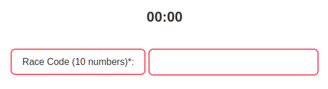
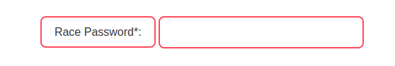
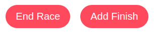
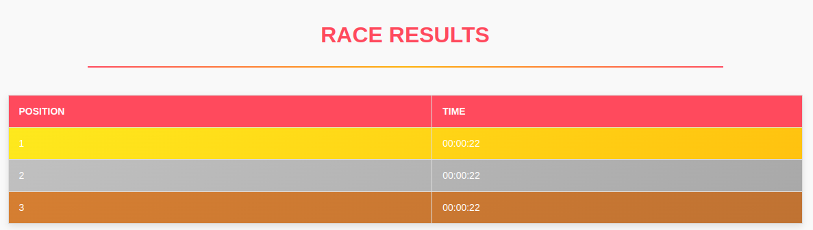
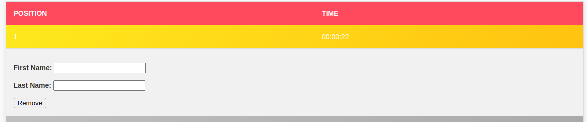

Your guide to understanding the app.
This app helps users manage their race results and share those results with runners. It provides real-time updates and allows you to check your previous race positions.
To check your race results, simply navigate to the "Race Results" tab in the app and enter the race code given to you by the organiser. The results will display in chronological order with relevant details.
To start your own event, click on the "Create Race" button.
Enter a 10 digit race code, this code you can share with partipants.
Enter a PRIVATE and secure password, this will be used to access the race again at a later date.
Fill in the other details as you like, these are not required.
Press start to begin the race.
When a runner crosses the finish line, press the "add finsh" button
the result will be shown below
editing results?
To edit a runners name, enter there name by clicking on the runner, and entering their details in the boxes below.
Saving the race?
Using the auto save switch, allows the race to be automatically saved.
if a internet connection is found the race will be automatically be uploaded online.
if no internet connection is found, the race will be saved on the owners device untill a connection is found and the results can be uploaded.
Yes! We use encryption to ensure your data is stored securely. Only authorized users can access their race data with the correct credentials.
If you need help, you can contact support by clicking the "Contact Us" button in the app or emailing us at support@racetracker.com.